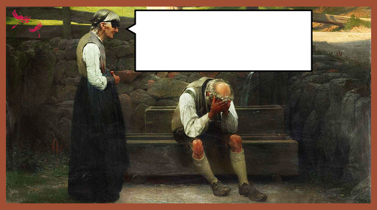
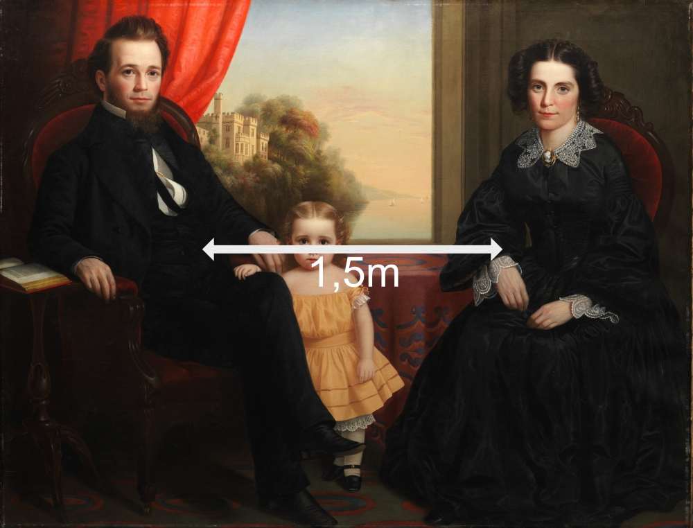
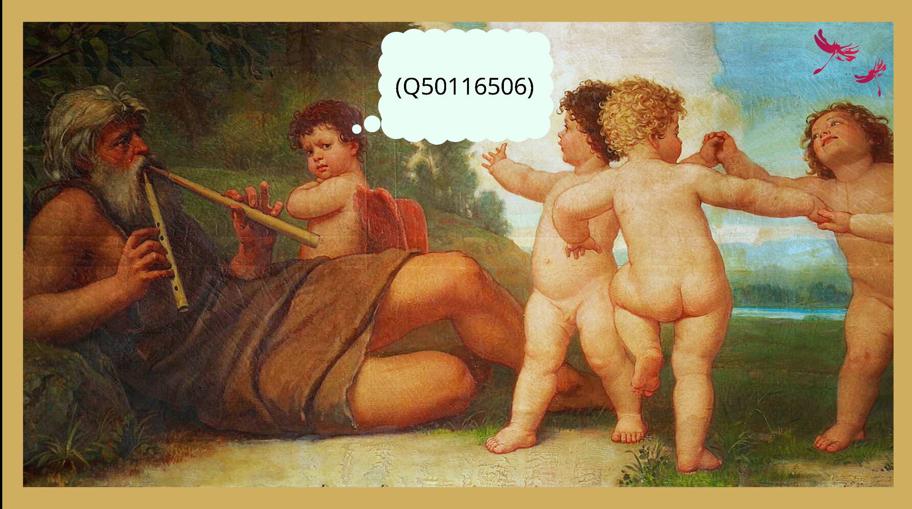

Einfach neue Ausstellungen machen?
Im Oktober 2019 startete die Deutsche Digitale Bibliothek (DDB),1 das zentrale Aggregationsorgan für digitalisiertes Kulturerbe in Deutschland mit derzeit über 65 Millionen verzeichneten Objekten, DDBstudio.2 DDBstudio ist ein Service, mit dem Kulturerbeinstitutionen gebührenfrei und niedrigschwellig ansprechende virtuelle Ausstellungen erstellen und publizieren können, ohne auf die kommerziellen und datenhungrigen Alternativen US-amerikanischer Konzerne zurückgreifen zu müssen. Mit virtuellen Ausstellungen können Objekte, die in der DDB oder anderswo veröffentlicht sind, in narrativen, thematischen Zusammenhängen präsentiert werden: in Geschichten, mit Hintergründen und Verknüpfungen für digitale Geschichten
, und damit in einer Weise, wie dies in der objektfokussierten Standarddarstellung der DDB nicht möglich ist. Damit ist DDBstudio ein wertvolles Instrument der Vermittlung, das von den Kulturerbeeinrichtungen rege genutzt wird. Seit Ende 2019 sind 278 virtuelle Ausstellungen entstanden und einige mehr sind in Vorbereitung.3
Im Februar 2026 machte die Nachricht die Runde, dass die DDB durch Mittelkürzungen gezwungen sei DDBstudio einzustellen.4 Die für die Betreuung des Angebots nötigen Personalressourcen könnten nicht mehr finanziert werden. Unveröffentlichte Ausstellungen werden noch ergänzt, ältere bleiben online – vorerst zumindest.
Die finanziellen Einschnitte trafen die DDB hart – und mit ihr die digitalisierenden Kulturerbeinstitutionen ebenso wie die Bürger:innen, die digitales Kulturerbe rezipieren und nutzen. Mit der DDB fehlt in diesem Jahr auf der Leipziger Buchmesse und bei der BiblioCon, zwei zentralen Veranstaltungen des deutschen Buch- und Bibliothekswesens, eine wichtige Stimme der kulturellen Daseinsvorsorge im digitalen Raum.
Beim monatlichen Jour Flexe des Netzwerks WikiKult – Offene Kulturdaten
, dem freien Zusammenschluss von Expert:innen in Kulturerbeeinrichtungen, waren diese Kürzungen im Februar 2026 Gesprächsthema.5 Die erste Idee: Wie können wir mit Wikimedia Commons, Wikidata oder Wikiversity – allgemein: mit Werkzeugen und Ressourcen des Wikiversums6 – neue virtuelle Ausstellungen ermöglichen, wenn DDBstudio dafür nicht mehr zur Verfügung stehen sollte? Der daraus entstehende Impuls: Metadatenaktivismus.7 Wir erschließen einfach die bisher veröffentlichten DDB-Ausstellungen mit Wikidata selbst, um die Ausstellungsdaten beziehungsweise deren Metadaten linked open
zu sichern.8

{kind=link}
Mittlerweile wurde zwar die Wiederaufnahme des DDBstudio ab September 2026 bekannt gegeben, allerdings mit eingeschränktem Service und nur noch für aktive Datenpartner der DDB.9
Ad-hoc-Katalogisierung – Call for Edits
WikiKult hat bereits im Mai 2025, also lange vor Ankündigung der Mittelkürzung, ein erstes Set frei zugänglicher, semi-strukturierter Metadaten der DDB-Ausstellungen extrahiert, aufbereitet und in Wikidata veröffentlicht, weil die DDB als ein wichtiger Baustein der deutschen Open-GLAM-Infrastruktur größere Sichtbarkeit im Wikiversum und im Linked-Open-Datenraum verdient. Die virtuellen Ausstellungen sollten so als eigenständige Produkte für die Rezeption und Vermittlung von Kulturerbe dokumentiert werden. Eine weitere Motivation hinter dieser Metadatenarbeit: Die selbstgestellte Aufgabe, semistrukturiert vorliegende Daten für die Linked-Open-Welt aufzubereiten, ist anregend und in gewisser Weise auch sinnstiftend. Informationen werden dadurch besser auffindbar, leichter zugänglich, interoperabler und besser nutzbar, kurz: FAIR. Insbesondere die Verwendung von Wikidata kann ein integraler Bestandteil des Strebens nach FAIR(er)en Daten sein. Hinter dem schon bemühten Akronym FAIR stehen zentrale Qualitätskriterien für gut nutzbare Forschungsdaten. Daten sollen findable, accessible, interoperable und reusable sein.
Die Ausstellungen der DDB verfügen originär über keine expliziten Metadaten, zum Beispiel im Sinne eines Katalogisats. Sie stehen als Webangebote für sich, sind auf einer Übersichtsseite der DDB lediglich mit ihrem Titel aufgelistet und die einzelnen Ausstellungen verfügen über nur schwach strukturierte Angaben, wie zum Beispiel Urheber:innen oder Veröffentlichungsdatum. Die FAIR-Prinzipien erfordern jedoch explizite, maschinenlesbare und nötigenfalls über die Lebensdauer des Objekts hinaus persistente Metadaten. Eine Erschließung in Wikidata erzeugt zusätzlich Metadaten, die diese Anforderungen erfüllen.
Aufbauend auf diesem schon gelegten Fundament haben wir nach der bitteren Nachricht im Februar 2026 beschlossen, weitere Informationen über die virtuellen Ausstellungen zusammenzutragen und in Wikidata zu ergänzen, insbesondere folgende Angaben:
Tabelle 1: Zusätzliche Informationen über die virtuellen Ausstellungen in Wikidata inklusive Beispielen
| Aussagen | Wik idata- Pro perty |
Beispiele |
|---|---|---|
| zentrale Themen / Schlagworte | P921 | |
| Datum der Veröffentlichung | P577 | |
| Publizierende Institution | P123 | Als Weihnachten ins Wasser fiel. Remshochwasser 1919 (Q13447 5380#P123) |
| Bilder, die bereits in Wikimedia Commons vorliegen | P18 | Himmelswege. Formen spätmittelalterlicher Laienfrömmigkeit im mitteldeutschen Raum |
| Sprachvarianten wie Englisch und Albanisch | S prache: (P407) off izielle W ebseite (P856) |
Spotlight on the Object | PERSON, PLACE or THING (Q134475369) Tiranë, Korrik 1990 - Tirana, Juli 1990 Arratisje në Ambasadën Gjermane - Flucht in die Deutsche Botschaft (Q13447 5231#P407) |
| URL des Archivs (Internet Archive) | P1065 | Zitrusmanie. Goldene Früchte in fürstlichen Gärten, Qualifier (P1065) in (Q13447 5228#P856) |
| Wikimedia Commons-Kategorie für Ausstellungsbilder | P373 | Category:DDBstudio Gemeinsam für Freies Wissen (Q134 475374#P373) |
| reziproke Aussage ‘beschrieben in’ für Qid zentraler Themen | P1343 | Pädagogische Lesungen (Q1022271 01#P1343) |
| K10plus PPN ID | P6721 | Die kontaminierte Bibliothek. Mikroben in der Buchkultur (Q1344752 19#P6721) |
| zitiert | P2860 | Ankunft auf Zeit. Die Cottbuser Kriegsgefangenenlager von 1914 bis 1924 (Q1344753 52#P2860) |
| Katalog (Regionalbibliografie) | P972 | Zum Shopping in die DDR. Die DDR-Einkäufe des West-Berliner Museums für Verkehr und Technik (Q13447 5238#P972) |
Wikimedia Commons
Einige virtuelle Ausstellungen enthalten Bilder mit Quellenangabe und Link zur entsprechenden Ressource in Wikimedia Commons. Auch Bilder ohne Verweis auf Wikimedia Commons sind dort trotzdem zu finden. All diese Illustrationen können in neu erstellten Ausstellungskategorien gebündelt werden, die als Unterkategorien in der Commons-Kategorie der DDB verlinkt sind.10 Selbstverständlich könnten nun in spezifische Ausstellungskategorien in Wikimedia Commons weitere offen lizenzierte Ausstellungsbilder geladen und somit ergänzt werden. Dann stehen sie im Wikiversum für Einbettungen in Wikipedia und Wikiversity oder im Idealfall für Bearbeitungen und auch für die allgemeine Nachnutzung zur Verfügung. Wikidata-Infoboxen für solche Kategorien verknüpfen und zeigen Metadaten der zugehörigen Datenobjekte in Wikidata für jede Ausstellung. Durch Kategorisierungen am unteren Bereich der Commons-Seiten können die Ausstellungskategorien den beteiligten Institutionen oder Personen und Themen zugeordnet werden, deren Commons-Kategorien ihrerseits Inhalte und gegebenenfalls Unterthemen bündeln, um dieses objektbasierte Wissen zu strukturieren.

{kind=link}
Die Ausstellungserschließung in Wikidata ist längst nicht abgeschlossen, weitere Präsentationen sollen folgen. Wir haben eine Dokumentation angelegt, mit der Ausstellungsmacher:innen und auch die DDB-Geschäftsstelle selbst im Zuge von Neuveröffentlichungen Metadaten mit Wikidata dokumentieren und vernetzen könnten.11 Die Doku kann von allen einfach ergänzt werden, getreu dem Motto it is open, it’s a wiki
. Dort gesammelte Links, Hinweise und Fragen können als Anregungen für ähnlich gelagerte Vorhaben dienen und als digitale Spuren solcher verknüpften Erschließungsgeschichten.12
Deutlich wird das Potential für Kontextualisierungen der Ausstellungsinhalte durch Commons-Kategorien am Beispiel der Ausstellung Albrecht Dürer – 500 Jahre Meisterstiche
. Da für Dürers Stiche teils mehrere digitalisierte Versionen, Bildausschnitte und Varianten existieren, sind diese in bildspezifischen Commons-Kategorien gebündelt und mit Wikidata verknüpft. Die Ausstellungskategorie Category:DDBstudio Albrecht Dürer – 500 Jahre Meisterstiche bündelt die gezeigten Stiche, so dass Besucher:innen diese erweiterten Ausstellungsräume zusätzlich in Wikimedia Commons erkunden können.
Beifang: Datenpflege II. Ordnung
Als Beifang kann die indirekte Datenpflege an benachbarten
Themen und Datenobjekten bezeichnet werden. Ausstellungsmacher:innen in Wikidata13 – Archiven, Bibliotheken, Vereine und andere Initiativen – profitieren zusätzlich, wenn wir ihre institutionellen Metadaten in Wikidata nebenbei anreichern und verknüpfen. Bei der Formal- und Sacherschließung von Ausstellungen und anderen Werken in Wikidata greifen wir meist auf bereits bestehende Datenobjekte zurück, ergänzen und verbessern diese, wenn sie noch leer, ohne Aussagen oder fehlerhaft sind – und wir schaffen neue Datenobjekte für die Themen und Gegenstände der virtuellen Ausstellungen, um sie beispielsweise mit Normdaten der GND und VIAF zu verknüpfen. Für die virtuellen Ausstellungen sind das beispielhaft die neuen Wikidata-Items für die Arbeitsgruppe Kritische Geographien globaler Ungleichheiten (Q138685193) in Hamburg oder die Arbeitsstelle Pädagogische Lesungen (Q138758452) in Rostock. Verknüpft sind diese nun reziprok mit Datenobjekten der DDB-Ausstellungen jeweils in der Aussage (P1343 – beschrieben in
), also (Q138758452#P1343), beziehungsweise ermittelbar über die Wikidata-Spezialabfrage What links here
, die einen gegebenenfalls verlinkten Kontext für jedes Datenobjekt anzeigt.14 Datenpflege an bereits bestehenden Items beispielsweise für zitierte Zeitungen, Zeitschriften und andere Publikationen umfasst neben formalen Metadaten fehlende Verknüpfungen mit der Zeitschriftendatenbank ZDB, PPN oder OCLC-Ids. Ein Beispiel hierfür: Die Märkische Volksstimme (1890–1933) (Q107499030) wird in der Ausstellung Ankunft auf Zeit. Die Cottbuser Kriegsgefangenenlager von 1914 bis 1924
erwähnt: (Q134475352#P2860). Am 22. März 2026 war dieses Item noch fast leer.15 Datenpflege erhöht so die Aussagekraft von Wikidata sowohl direkt für die Zeitung als auch indirekt für die verknüpfte Ausstellung; verbesserte Datenqualität verringert Verwechslungsgefahr, in diesem Fall mit der Märkischen Volksstimme (Q1957451), die erst ab 1946 erschien.
Katalogisierung im Verbund
Idealerweise werden Ausstellungen in und virtuelle Ausstellungen von Archiven und Bibliotheken auch bibliografisch erschlossen, um deren Existenz zu dokumentieren und Inhalte sowie verknüpfte Medien dauerhaft für die Wissenschaft sichtbar und zugänglich zu machen, zum Beispiel in Ausstellungskatalogen und auf Webseiten.16 Die virtuellen Ausstellungen der DDB waren bisher nicht in Verbundkatalogen erschlossen.
Inzwischen wurden DDB-Ausstellungen, die Saxonica enthalten, in der Sächsischen Bibliografie erfasst17 und deren PPN mit den Wikidata-Items in (P6721) verknüpft. Mit fortschreitender Erschließung in Wikidata beziehungsweise neu veröffentlichten Ausstellungen wächst diese Liste möglicherweise noch. Zu wünschen wäre außerdem, dass auch andere Landes- und Regionalbibliotheken regional relevante Ausstellungen in ihren Regionalbibliografien erschließen.

.jpg){kind=link}
Daten strukturieren – Datengrundlage schaffen
Die Informationen zu den Ausstellungen liegen auf der entsprechenden Übersichtsseite18 schwach strukturiert als HTML-Code vor. Um vor einer tiefergehenden, manuellen (und arbeitsintensiven) Erschließung zunächst eine kritische Masse an Basisinformationen in Wikidata zu übernehmen, wurde die Übersichtsseite – wie oben beschrieben schon im Mai 2025 – maschinell ausgewertet, das heisst insbesondere die Titel und URLs der Ausstellungen wurden mit einem Python-Script ausgelesen und in ein strukturiertes Format (sprich: eine Tabelle) überführt. Dies war die Datengrundlage für den Upload basaler Metadaten zu den Ausstellungen. Der Upload erfolgte mit dem Quickstatements-Tool19, das in tabellarischer Form vorliegende Informationen mit einem Minimum an Befehlssyntax nach Wikidata lädt. In einem nächsten Schritt wurde im Rahmen der systematischen Erschließung der Ausstellungen versucht, auf den Seiten der einzelnen Ausstellungen weitere Informationen (wie zum Beispiel das Publikationsdatum der Ausstellung) in eine strukturierte Form zu bringen und ebenfalls über Quickstatements nach Wikidata zu laden.
Der Vorteil dieses Vorgehens liegt in der Effizienz, da alle verfügbaren Ausstellungen mit geringem Aufwand en bloc in Wikidata dokumentiert werden können, die aufwändigen manuellen Interventionen also auf die Ergänzung von Informationen konzentriert werden konnten, die nicht ohne Weiteres automatisiert zu erfassen sind.
Datenmodellierung
Wikidata zeichnet sich durch ein sehr flexibles Datenmodell aus. Es stehen über 13.000 Properties zur Verfügung, mit denen Aussagen über Wikidata-Items getroffen werden können.20 Die Flexibilität bringt es mit sich, dass für die Beschreibung von Wikidata-Objekten ein geeignetes Datenmodell ermittelt werden muss. Hier bietet es sich an, Empfehlungen etablierter WikiProjekte zu berücksichtigen. Für virtuelle Ausstellungen lohnt zum Beispiel ein Blick auf das WikiProject Exhibitions, das Properties aufführt, mit denen sich typischerweise Ausstellungen gut beschreiben lassen.21 Ergänzend und/oder alternativ lassen sich good practices auch aus einschlägigen Wikidata-Items ableiten oder aber Tendenzen in der Beschreibung über geeignete SPARQL-Queries ermitteln.
Für Onlineausstellungen
(Q3062261) ergibt beispielsweise folgender SPARQL-Query (https://w.wiki/J7w5) eine Übersicht der verwendeten Properties:
SELECT ?property ?propertyLabel (COUNT(?property) AS ?haeufigkeit) WHERE
{
?virtuelleAusstellung wdt:P31 wd:Q3062261 ;
?p ?\_ .
?property wikibase:directClaim ?p .
SERVICE wikibase:label { bd:serviceParam wikibase:language
\"\[AUTO_LANGUAGE\],mul,en\". }
}
GROUP BY ?property ?propertyLabel
ORDER BY DESC(?haeufigkeit)Die zwölf häufigsten Properties sind demnach:22
Tabelle 2: Überblick der häufigsten Properties für Onlineausstellungen
in Wikidata
| property | propertyLabel | Häufigkeit |
|---|---|---|
| P131 | liegt in der Verwaltungseinheit | 10672 |
| P31 | ist ein(e) | 6524 |
| P856 | offizielle Website | 6228 |
| P17 | Staat | 5966 |
| P5008 | auf der Arbeitsliste des Wikimedia-Projektes | 5876 |
| P664 | Veranstalter | 5656 |
| P1476 | Titel | 2056 |
| P921 | zentrales Thema | 674 |
| P577 | Veröffentlichungsdatum | 255 |
| P407 | Sprache des Werks, Namens oder Begriffes | 114 |
| P123 | Verlag | 111 |
| P1344 | Teilnehmer an | 47 |
Diese Angaben bieten eine Orientierung, wie Onlineausstellungen in Wikidata beschrieben werden können, sie müssen jedoch fallbezogen angepasst werden. Für die Grunderschließung der virtuellen Ausstellungen der DDB wurden regelmäßig Titel (P1476), die Deutsche Digitale Bibliothek (Q621630) als Veranstalter (P664), die publizierende Einrichtung als Verlag (P123) und die Ausstellungs-URL als offizielle Website (P856) angegeben. Hinzu kam schließlich noch das Veröffentlichungsdatum der Ausstellung (P577). Alle Ausstellungen werden zudem als Onlineausstellungen
(Q3062261) klassifiziert (P31).
Folgender Query (https://w.wiki/KFR2) listet die bisher in Wikidata nach beschriebenem Muster erschlossenen virtuellen Ausstellungen der DDB auf:
SELECT ?virtuelleAusstellung ?virtuelleAusstell ungLabel WHERE {
?virtuelleAusstellung wdt:P31 wd:Q3062261 ;
wdt:P664 wd:Q621630 .
SERVICE wikibase:label { bd:serviceParam wikibase:language
\"\[AUTO_LANGUAGE\],mul,en\". }
}Bemühen um Persistenz. DIY-Webarchivierung mit der Wayback Machine
Die Mittelkürzungen bei der DDB mit der Streichung der virtuellen Ausstellungen führen es deutlich vor Augen: Viele Inhalte und Angebote sitzen auf einer prekären Infrastruktur auf, die nur so lange trägt, wie sie finanziert wird. So scheint es nicht mehr ausgeschlossen, dass auch die bestehenden, mühsam erstellten und wertvollen virtuellen Ausstellungen der DDB irgendwann dem Rotstift zum Opfer fallen. Um dem Risiko eines vollständigen Gedächtnisverlusts möglichst vorzubeugen, müssen die Ausstellungen archiviert werden. Als Online-Publikationen dürften die Ausstellungen zwar theoretisch in den Sammelauftrag der Landesbibliotheken oder der Deutschen Nationalbibliothek fallen, praktisch scheint eine Archivierung jedoch bis dato nicht zu erfolgen.
Als eine alternative Archivierungsmöglichkeit, die auch unabhängigen Initiativen offensteht, bietet sich die WayBack-Machine des Internet Archive an.23
Die in Wikidata nunmehr strukturiert vorliegenden Ausstellungs-URLs wurden automatisiert im Internet-Archive gespeichert und die Archiv-URLs über den Qualifier P1065 (URL des Archivs) zur Angabe der offiziellen Website (P856) ergänzt. Somit ist die Ausstellung im Internet Archive archiviert und der Nachweis über Wikidata dokumentiert. Sollte es also dazu kommen, dass auch die bestehenden Ausstellungen offline gehen, lassen sich über das Wikidata-Item nicht nur basale Metadaten über die Ausstellung abrufen, sondern man gelangt über den Archivlink auch zur archivierten Version der Ausstellung im Internet Archive.
Ausstellungen einfach machen
Wissenskommunikation linked open
Der Ansatz hinter den hier skizzierten offenen Arbeitsweisen mit Wikidata und Links wurde an anderer Stelle bezeichnet als Linked Open Storytelling
mit offenen Kulturdaten, mit deren offenen Metadaten und mit Links von Projekten, Publikationen beziehungsweise wie in diesem Fall mit virtuellen Ausstellungen und ihren Metadaten.24 Kollaborative Erschließung und Archivierung der DDB-Ausstellungen wären ohne Social Media – namentlich ohne Tröts und Links im Fediverse – wohl kaum zustande gekommen. Der Impuls zur Erschließung erfolgte in einem Mastodon-Post.25 Der wurde dort von der regen Bibliotheks-Community aufgegriffen. Die Arbeit an den Metadaten wird durch weitere Posts26 begleitet und ist in Blogposts27 dokumentiert. Im Fediverse wurde schließlich auch das Team der DDB-Geschäftsstelle auf die Erschließungsaktivitäten aufmerksam, was zu einem Onlinetreffen und dann zu engerem Austausch zwischen Wikikult-Mitgliedern und der DDB führte.
Über die DDB-Kooperation hinaus sind von uns mit Kolleginnen im Archivesektor Erfahrungsaustausch und Ideenrunden angedacht, um dort für das Jahr 2026 geplante Ausstellungsprojekte möglicherweise doch noch verwirklichen zu können. Die Idee dabei: Mit oder ohne DDBstudio – offene digitale Plattformen und Werkzeuge ergänzen sich im Idealfall.
Virtuelle Ausstellungen im Wikiversum?
Eignet sich nun womöglich auch das Wikiversum für digitale Ausstellungen? Nur bedingt. Ein schlichter Nachbau der Funktionalität, zum Beispiel von DDBstudio, ist mit den aktuellen Mitteln des Wikiversum kaum zu bewerkstelligen. Neben technischen Hürden sind hier auch Anforderungen an die Lizenzierung eine Hürde. In DDBstudio können auch urheberrechtlich geschützte Objekte verwendet werden, sofern die virtuell ausstellenden Institutionen über die entsprechenden Rechte verfügen. Das Wikiversum pocht auf Offenheit und offene Lizenzen. Urheberrechtlich geschützte Medien ohne geeignete Lizenz (CC BY-SA oder offener) können nicht verwendet werden. Für virtuelle Ausstellungen ist dies eine empfindliche Einschränkung.
Das Wikiversum bietet für bestimmte Szenarien interessante Ansätze. So können auf Wikimedia Commons Objekte in Kategorien zusammengefasst und in Bildergalerien präsentiert werden. Die Wikipedia selbst kann ungeachtet ihres enzyklopädischen Anspruchs ganz analog zu virtuellen Ausstellungen Kulturerbe in Kontext setzen, andere Wikimedia-Projekte wie etwa Wikiversity28 bieten nochmals mehr Freiheiten und andere Möglichkeiten. All dies adressiert jedoch nur Teilaspekte von virtuellen Ausstellungen.29
Doch womöglich ist die technische Infrastruktur, der Service, auf dem virtuelle Ausstellungen beruhen, auch nicht der zentrale Punkt. Virtuelle Ausstellungen wollen – in der Regel unter Zuhilfenahme digital(isiert)er Objekte – Geschichten erzählen, unterhalten, belehren, inspirieren, provozieren, Kontexte herstellen und Brücken schlagen. Dieses Linked Open Storytelling
, das hypertextuelle Erzählen von Geschichten mit und zu Objekten, lässt sich mit ganz unterschiedlicher Technologie leisten. Vom Social-Media-Post über den Blog-Post bis zur ausgewachsenen Webseite – überall lässt sich Kulturerbe präsentieren und verknüpfen.
Zwei Herausforderungen bleiben: Verlinkung im Internet ist unidirektional, das heißt, ein Link verweist auf eine andere Ressource, von der Ressource führt jedoch in der Regel kein Link zurück. Eine enge Vernetzung im Sinne von Linked Open Data liegt hier also nicht vor.30 Innerhalb des MediaWiki-Ökosystems ist diese Bidirektionalität insofern gegeben, als eingehende Verlinkungen für jede Seite über die schon oben erwähnte What links here
-Spezialseite nachvollzogen werden können.
Auch wenn noch keine vollends überzeugende Lösung zur Verfügung steht, die Objekte im Netz engmaschig (auch bidirektional) verknüpft: Metadaten für virtuelle Ausstellungen können diese sichtbarer und besser auffindbar machen. Metadaten legen Datenspuren, die, wie oben gezeigt, die Archivierung und die Langzeitverfügbarkeit erleichtern, und die Anreicherung mit zusätzlichen Informationen: Wer hat die Ausstellung wann erstellt? Worum geht es? Was ist zu sehen? Wo finde ich sie oder ihre Archivversion?
Diese Erschließung und Anreicherung kann zentralisiert über Institutionen erfolgen. Oder sie geschieht metadatenaktivistisch
dezentral in Wikidata. Im besten Fall bereichern sich beide Erschließungsformen gegenseitig.
Aktivismus und Kooperation
Die WikiKult-Arbeitsgruppe beschäftigt sich mit dem Potential des Wikiversums für den GLAM-Sektor. Das hier beschriebene Beispiel für Metadatenaktivismus für durch Mittelkürzungen bedrohte Infrastrukturen zeigt Gelegenheiten auf für Kulturerbeeinrichtungen, um noch öfter über institutionelle und Ländergrenzen hinweg zu kooperieren; und Chancen, um die eigenen Sammlungsbestände, offene Daten und Community-orientierte Outreach
-Aktivitäten gemeinsam zu verknüpfen. Mit der Wikimediabewegung existiert ein besonderes Soziotop mit engagierten, regional verankerten und zugleich auch global vernetzten Aktiven, die längst auch in deutschen GLAM-Institutionen arbeiten, Sammlungen kuratieren, Daten und Wissensbestände verknüpfen. Am 10. und 11. Juni 2026 fand in Berlin das letzte WikiKult-Netzwerktreffen statt. Jede:r kann an diesen Treffen teilnehmen, um Kooperationen für offene Kulturdaten kennenzulernen, zu erleben und neue anzustoßen. Einmal im Monat trifft sich das Netzwerk zwischen 12 und 13 Uhr für fachlichen Austausch, kurze Vorträge und Organisatorisches.31
Die Kooperation mit der Deutschen Digitalen Bibliothek wird wachsen: in Commons-Kategorien, mit einem gemeinsamen Social-Media-Hashtag, Ideen-Pingpong und offenen Metadaten in Wikidata. Wie die Zusammenarbeit mit DDB und Wikimedia-Bewegung gestaltet wird, welche Funktionen oder welche Wikis und welche digitalen Werkzeuge und Gemeinschaften im Wikiversum für welche Funktion, Ausstellungs- und Vermittlungszwecke besonders geeignet sind, gilt es nun, gemeinsam zu entdecken.
Vgl. die Pressemitteilung vom 8.10.2019: https://www.deutsche-digitale-bibliothek.de/content/blog/ddbstudio-mit-virtuellen-ausstellungen-geschichten-erzaehlen-neuer-service-der-deutschen-digitalen-bibliothek/↩︎
Für einen Überblick vgl. https://www.deutsche-digitale-bibliothek.de/content/virtuelle-ausstellungen↩︎
Deutsche Digitale Bibliothek: Newsletter, Virtuelle Austellungen, Februar 2026, https://www.deutsche-digitale-bibliothek.de/content/newsletter/newsletter-virtuelle-ausstellungen-februar-2026↩︎
https://meta.wikimedia.org/wiki/WikiKult_-_Offene_Kulturdaten↩︎
Zum Begriff
Wikiversum
, mit dem Wikipedia und ihre Schwesterprojekte wie z. B. Wikidata, Wikimedia Commons und Wikisource gemeint sind, vgl. https://de.wikipedia.org/wiki/Wikiversum.↩︎Wikidata: Metadatenaktivismus (Q138306679)↩︎
Vgl. https://www.deutsche-digitale-bibliothek.de/content/blog/virtuelle-ausstellungen-bleiben-ein-angebot-der-deutschen-digitalen-bibliothek↩︎
https://commons.wikimedia.org/wiki/Category:Deutsche_Digitale_Bibliothek↩︎
https://meta.wikimedia.org/wiki/WikiKult_-_Offene_Kulturdaten/Virtuelle_Ausstellungen↩︎
Vgl. https://osl.hypotheses.org/20726 und https://osl.hypotheses.org/21392↩︎
Jens Bemme, Martin Munke: Call for Edits Nearby: Open Archives Metadata from Saxony. https://doi.org/10.5334/johd.430↩︎
Zum Beispiel https://de.wikipedia.org/wiki/Hilfe:Links_auf_diese_Seite für die deutsche Wikipedia↩︎
Wikidata: https://www.wikidata.org/w/index.php?title=Q107499030&oldid=2474652992.↩︎
Vgl. etwa das bayerische Kulturportal Bavaricon, das an der BSB angesiedelt ist und Ausstellungen regelmäßig auch im Bibliothekskatalog erschließt, siehe etwa die Ausstellung
Revolution und Räterepubliken in Bayern 1918/19
(https://www.bavarikon.de/object/bav:BSB-CMS-0000000000003602) mit dem Katalogisat https://opacplus.bsb-muenchen.de/title/BV046755805.↩︎K10Plus: https://opac.k10plus.de/DB=2.299/PPNSET?PPN=735684553 sowie Sächsische Bibliografie im K10Plus: https://swb.bsz-bw.de/DB=2.304/SET=3/TTL=1/FAM?PPN=735684553↩︎
https://www.deutsche-digitale-bibliothek.de/content/virtuelle-ausstellungen↩︎
Vgl. https://www.wikidata.org/wiki/Wikidata:List_of_properties↩︎
https://www.wikidata.org/wiki/Wikidata:WikiProject_Exhibitions↩︎
Diese Statistik basiert auf aktuellen Daten und ist damit durch die bereits erfolgte Erschließung der DDB-Ausstellungen verzerrt.↩︎
Wikidata: Linked Open Storytelling, https://www.wikidata.org/wiki/Q66631860#P973↩︎
Jens Bemme (15. Februar 2026). DDB-Ausstellungen: Eröffnen, besuchen,
putzen
– Nutzen. Zeit für Metadatenaktivismus. SLUB Open Science Lab. Abgerufen am 22. März 2026 von https://doi.org/10.58079/15oza sowie (23. März 2026). Ausstellungsdaten kuratieren für die Deutsche Digitale Bibliothek. SLUB Open Science Lab. Abgerufen am 23. März 2026 von https://doi.org/10.58079/15s59.↩︎Vgl. den Post Lukas Fuchsgrubers, der sich auf der Konferenz Art History Loves Wiki in Hannover am 29. März 2026 im Rahmen eines Barcamps mit dem Thema virtuelle Ausstellungen im Wikiversum auseinandergesetzt hat: https://chaos.social/@lukasfx/116311742138494379.↩︎
Nur am Rande sei angemerkt, dass es mit sogenannten Webmentions (https://www.w3.org/TR/webmention/) technische Lösungen für diese Herausforderung gäbe, allein sind diese (noch) nicht weit verbreitet.↩︎
WikiKult: https://meta.wikimedia.org/wiki/WikiKult_Netzwerktreffen_2026↩︎
Alexander Winkler ist wissenschaftlicher Angestellter bei digiS, dem Forschungs- und Kompetenzzentrum Digitalisierung Berlin (https://www.digis-berlin.de/), wo er sich aktuell insbesondere mit Metadatenqualität, Linked Data, Datennutzung und KI im GLAM-Sektor beschäftigt. Er hat Latinistik und Italianstik, Renaissancewissenschaften und Bibliotheks- und Informationswissenschaften in München, Pisa, Warwick und Berlin studiert und über ein neulateinisch-italianistisches Thema promoviert. ORCID: https://orcid.org/0000-0002-9145-7238 | Mastodon: awinkler@openbiblio.social
Jens Bemme studierte Verkehrswirtschaft und Lateinamerikastudien. Als Mitarbeiter der SLUB Dresden begleitet er landeskundliche Open-Citizen-Science-Initiativen insbesondere mit Werkzeugen, Daten, Methoden und Gemeinschaften der Wikimedia-Bewegung. Tafellieder, Tanzkarten und die gemeinfreien Publikationen historischer Geschichtsvereine stehen derzeit im Fokus. ORCID: https://orcid.org/0000-0001-6860-0924 | Mastodon: JensB@openbiblio.social